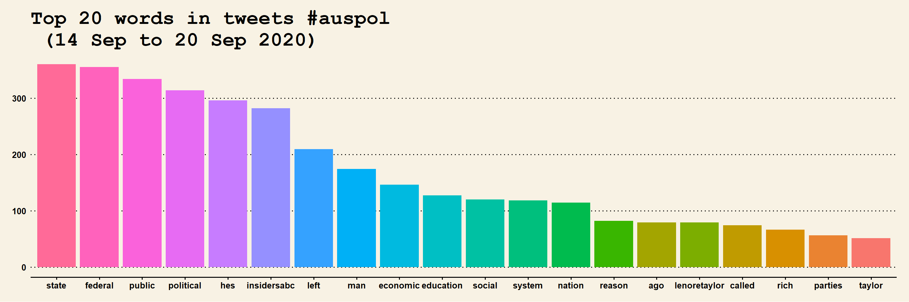

16.5 Some Visualisation
- Bar Chart of top words
library(tm)
load("auspol_sep.RData")
# Build TDM
tdm = TermDocumentMatrix(myCorpus, control = list(wordLengths = c(3, Inf)))
m = as.matrix(tdm)
word.freq = sort(rowSums(m), decreasing = T)
# plot term freq
term.freq1 = rowSums(as.matrix(tdm))
term.freq = subset(term.freq1, term.freq1 >= 50)
df = data.frame(term = names(term.freq), freq = term.freq)
df = transform(df, term = reorder(term, freq))
library(ggplot2)
library(ggthemes)
m2 = ggplot(head(df, n = 20), aes(x = reorder(term, -freq), y = freq)) + geom_bar(stat = "identity",
aes(fill = term)) + theme(legend.position = "none") + ggtitle("Top 20 words in tweets #auspol \n (14 Sep to 20 Sep 2020)") +
theme(axis.text = element_text(size = 12, angle = 90, face = "bold"), axis.title.x = element_blank(),
title = element_text(size = 15))
m2 = m2 + xlab("Words") + ylab("Frequency") + theme_wsj() + theme(legend.position = "none",
text = element_text(face = "bold", size = 10))
m2

Figure 16.3: Top 20 Words
- Word Cloud 1
library(wordcloud)
library(RColorBrewer)
pal = brewer.pal(7, "Dark2")
wordcloud(words = names(word.freq), freq = word.freq, min.freq = 5, max.words = 1000,
random.order = F, colors = pal)
Figure 16.4: Wordcloud-1
- Word Cloud 2
library(wordcloud2)
# some data re-arrangement
term.freq2 = data.frame(word = names(term.freq1), freq = term.freq1)
term.freq2 = term.freq2[term.freq2$freq > 5, ]
# figure-3.4
wordcloud2(term.freq2)Figure 16.5: Wordcloud-2
The word cloud reflects the discussion around the Federal Government’s new Energy Policy announced during the data time period